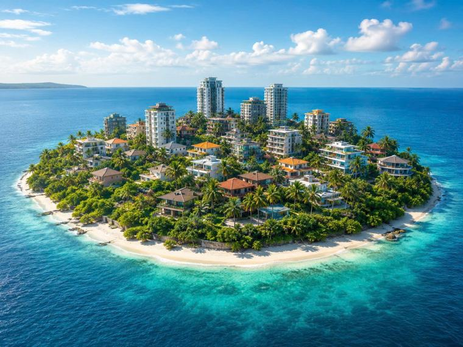
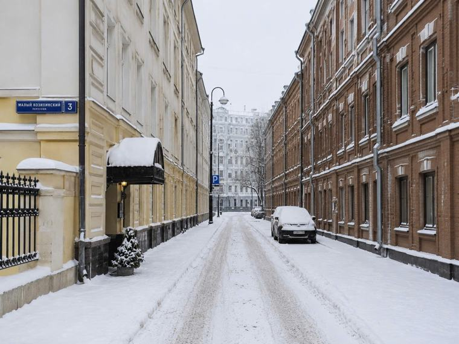

Part 3: In this part, I'm going to ask you to compare two pictures, and I will then ask you two questions about them. You will have 45 seconds for each response. (15p)
Tell me what you see in the two pictures. (compare the two pictures/ Describe the two pictures)
The two pictures show different places
In the first picture, I can see an island. It is beautiful and quiet. There are some buildings (surrounded by many trees) and many trees. The water is clear and the sky is blue. The weather in this picture is very nice. It is sunny
In the second picture I can see a street and buildings. There are two cars (parking) on the street. The weather in this picture is very cold because I can see a lot of snow on the ground.


Places: beautiful, quiet, peaceful, exciting, busy, convenient, expensive, noisy, crowded..
Air/ weather/ people/ food/ costs of living..
Where do you prefer to live?
(What is the appealing of these places?)
(what are the attractions of these places?)
(What are the differences of these places?)
(What are the benefits/advantages) of these places?
Both places have different attractions, depending on people’s interests (preferences, budgets and situations).
Some people like to live in a big city because it is convenient.
For me, I prefer to live on the island because it is beautiful/stunning and peaceful. The air is fresh. The people are friendly and kind. The food is delicious, healthy and cheap.
People like to live in different places. What do you think?
People may have different ideas about this.
For me, I strongly agree with the idea. People like to live in different places because it is convenient for them. Besides, they have different interests, budgets and situations. For example, young people like to live in big cities because they can find good jobs. Old people like to live in the countryside because it is quiet and good for their health.